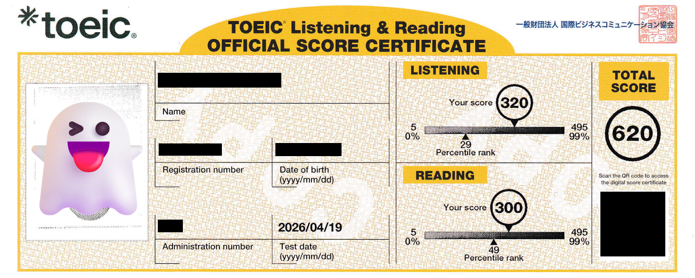

2026年5月22日 11:57

私は英語が苦手だ。具体的には共通テストで98/200 (R:34/100, L:64/100) を取ったりするレベル* 。そんな私が院試のために勉強した結果、何とか3ヶ月で620を取得することが出来た。記念に私の取り組みを残しておこうと思う。
私のような英語弱者や、昇進要件でTOEIC600がある人は参考になるかも知れない。
私のスコア推移はこんな感じ**。
要約すると、傾向を知るためにTOEICを受験したあと、1ヶ月で3冊の参考書を1周した。この1ヶ月の間は毎日4時間程度は英語をやっていたが、期間が過ぎるとほぼやっていない。単語帳だけは毎日見て、気が向けばリスニングや文法問題を触る感じ。毎週3時間程度の学習である。
12月頭に形式知る目的でTOEIC IP TESTを受験した。この受験で「ボキャブラリーが不足しすぎていること」、「Part5が壊滅的にできないこと」、「リスニングが何も聞き取れないこと」の3つが判明した。
ネットには「公式問題集だけで600突破可能」と主張する記事が散見されるので、私もそうやって対策しようと思っていた。しかし、この受験で基礎に大きな欠陥があると知ったため、参考書を用いてそれらを強化する方向に切り替えた。
ちなみに、傾向を知るだけなら公式問題集を家で解けば良いと思うかもしれない。事実それは正しいが、英語嫌いな私が自宅で時間を測って問題を解くことなど考えられなかったので、試験という強制力を利用した。私みたいな人は思い切って試験を受けてしまうのも手だと思う。
1月中旬から始めた。12月の受験で単語力が低すぎることが判明していたので、上級単語が多く含まれる金フレではなく、基礎単語がメインの銀フレを選んだ。
勉強を始めて数日で「これ、赤シートを動かしてるだけで覚えられてなくね？」と感じたので、すぐに本を用いた勉強をやめて、Ankiというフラッシュカードソフトを用いて学習した***。毎日新規で100単語表示するように設定して、1か月弱で1周目が完了。それ以降は毎日50単語ずつ復習した。
2ヶ月くらい経つと9割くらい瞬時に意味が浮かぶようになった。それ以降は維持を目的に毎日軽く触れる程度しかしていない。
【注意】銀フレは絶対に完璧にしたほうがいい。なぜなら、単語力が付くと1段階高い視座で原因追及ができるからだ。実際、単語が原因で解けないと思っていた問題を銀フレが完璧になった後に眺めると、実はそれ以外に原因があると気づくことが多かった。
Part5の対策本は『TOEIC L&Rテスト 文法問題 でる1000問』が有名だが、1000問もやりたくないのと、難易度が合ってないと感じたので姉妹書の『TOEIC L&Rテスト 文法問題はじめの400問』を選んだ。
1月中旬から1日40問のペースで取り組み、10日で1周した。この時点では解き方のパターンを「知っている」状態であり、正確かつ迅速に「使える」状態ではないので、何度も周回して解答パターンを瞬殺できるように心がけた。
1周目が終わった後は週2日くらい触る程度で、毎日はやっていない。
この本の弱みは、Part5に出題される語彙問題を1問も収録していない所にあるが、特に語彙問題の対策はしていない。この本を完璧にするだけで8割くらいはとれるようになるし、銀フレを極めれば、出題される語彙問題のうち半分くらいは解くことが出来るようになる。
収録されている問題数が多く、音声に本番のSpeakerが採用されているらしいので使うことにした。
これも1月中旬から毎日1Unit取り組んで、1ヶ月で1周した。その際、各Partの傾向を掴みながら聞き取れない個所の原因追及をすることに注力した。具体的には、答え合わせの際に耳に入った音とスクリプトを徹底的に比較した。すると聞き取れない原因は
の3つに大別されることに気づく。これらはすべて大量に音読することで解消された。
公式問題集だけを何周もする対策は、既に英語力を備えた人がTOEICに順応するには良いかも知れないが、そうでない人がやるのはよろしくない。利用するにしても上記3冊をそれなりに済ました段階で実力試しに使うのがよい。
共通テスト98/200から履歴書に書けるスコアを取得できたことは私にとっては大きな意味を持つ。というのも、今回の件で嫌いだった英語が少し好きになり、もう少し勉強したくなったのだ。TOEIC600は英語学習者の平均スコアらしく、英語界隈での実力はまだまだだが、今後も学習を進めて英語力を伸ばしていきたいと思う。
*) あまりにも低すぎる。大学進学できたのが奇跡なくらい。R:34, L:64は偏差値で言うと、それぞれ40, 51になります。（令和5年度 試験情報データ(本試験) 02_科目別成績分布(令和5年度大学入学共通テスト本試験 全教科・科目) より算出）
**) 冒頭に3ヶ月の勉強で620を取得したと書いたのに、12月に試験を受けていると思うかもしれない。しかし、1月中旬まで全くTOEIC対策をやっていないので、3ヶ月の勉強という表現は嘘ではない。
***) Ankiについては【すべての勉強する人たちへ】最強の暗記アプリAnkiについてご紹介しますが詳しい。